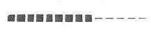
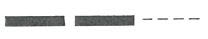
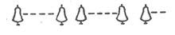
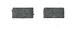
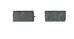
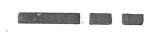
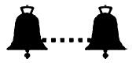

| A. Allgemeine Zeichen | |||
| 1 langer Ton | „Achtung“ | ||
| 1 kurzer Ton | „Ich richte meinen Kurs nach Steuerbord“ | ||
| 2 kurze Töne | „Ich richte meinen Kurs nach Backbord“ | ||
| 3 kurze Töne | „Meine Maschine geht rückwärts“ | ||
| 4 kurze Töne | „Ich bin manövrierunfähig“ | ||
|  | Folge sehr kurzer Töne | „Gefahr eines Zusammenstoßes“ | |
|  | Wiederholte lange Töne | ||
| oder | „Notsignal“ | § 4.04 Nr. 1 | |
|  | Gruppen von Glockenschlägen |
| B. Begegnungszeichen | |||
| Vorbeifahrt an Backbord verlangt | |||
| Normalfall: | |||
| 1 kurzer Ton des Bergfahrers | „Ich will an Backbord vorbeifahren“ | § 6.04 Nr. 4 | |
| 1 kurzer Ton des Talfahrers | „Einverstanden, fahren Sie an Backbord vorbei“ | § 6.04 Nr. 5 | |
| Abweichung: | |||
| 2 kurze Töne des Talfahrers | „Nicht einverstanden, fahren Sie an Steuerbord vorbei“ | § 6.05 Nr. 2 | |
| 2 kurze Töne des Bergfahrers | „Einverstanden, ich werde an Steuerbord vorbeifahren“ | § 6.05 Nr. 3 | |
| Vorbeifahrt an Steuerbord verlangt | |||
| Normalfall: | |||
|  | 2 kurze Töne des Bergfahrers | „Ich will an Steuerbord vorbeifahren” | § 6.04 Nr. 4 |
|  | 2 kurze Töne des Talfahrers | „Einverstanden, fahren Sie an Steuerbord vorbei“ | § 6.04 Nr. 5 |
| Abweichung: | |||
| 1 kurzer Ton des Talfahrers | „Nicht einverstanden, fahren Sie an Backbord vorbei“ | § 6.05 Nr. 2 | |
| 1 kurzer Ton des Bergfahrers | „Einverstanden, ich werde an Backbord vorbeifahren“ | § 6.05 Nr. 3 | |
| C. Überholzeichen | |||
| Überholen an Backbord des Vorausfahrenden verlangt | |||
| 2 lange Töne 2 kurze Töne des Überholenden | „Ich will auf Ihrer Backbordseite überholen“ | § 6.10 Nr. 2 | |
| Normalfall: | Kein Zeichen des Vorausfahrenden | „Einverstanden, Sie können auf meiner Backbordseite überholen“ | § 6.10 Nr. 3 |
| Abweichung: | |||
| 2 kurze Töne des Vorausfahrenden | „Nicht einverstanden, überholen Sie auf meiner Steuerbordseite“ | § 6.10 Nr. 4 | |
| 1 kurzer Ton des Überholenden | „Einverstanden, ich werde auf Ihrer Steuerbordseite überholen“ | § 6.10 Nr. 4 | |
| Überholen an Steuerbord des Vorausfahrenden verlangt | |||
| 2 lange Töne, 1 kurzer Ton des Überholenden | „Ich will auf Ihrer Steuerbordseite überholen“ | § 6.10 Nr. 2 | |
| Normalfall: | Kein Schallzeichen des Vorausfahrenden | „Einverstanden, Sie können auf meiner Steuerbordseite überholen” | § 6.10 Nr. 3 |
| Abweichung: | |||
| 1 kurzer Ton des Vorausfahrenden | „Nicht einverstanden, überholen Sie auf meiner Backbordseite“ | § 6.10 Nr. 4 | |
| 2 kurze Töne des Überholenden | „Einverstanden, ich werde auf Ihrer Backbordseite überholen“ | § 6. 10 Nr. 4 | |
| Unmöglichkeit des Überholens | |||
| 5 kurze Töne des Vorausfahrenden | „Man kann mich nicht überholen“ | § 6.10 Nr. 5 | |
| D. Wendezeichen | |||
| 1 langer Ton, 1 kurzer Ton | „Ich wende über Steuerbord“ | § 6.13 Nr. 2, § 6.16 Nr. 2 | |
|  | 1 langer Ton, 2 kurze Töne | „Ich wende über Backbord“ | § 6.13 Nr. 2, § 6.16 Nr. 2 |
| E. Zeichen bei der Einfahrt in und der Ausfahrt aus Häfen und Nebenwasserstraßen | |||
| 3 lange Töne, 1 kurzer Ton | „Ich will meinen Kurs nach Steuerbord richten“ | § 6.16 Nr. 2 | |
| 3 lange Töne, 2 kurze Töne | „Ich will meinen Kurs nach Backbord richten“ | § 6.16 Nr. 2 | |
| 3 lange Töne | „Ich will überqueren“ | § 6.16 Nr. 2 | |
| F. (ohne Inhalt) |
| G. Zeichen bei unsichtigem Wetter | |||
| |||
| 1 langer Ton, längstens jede Minute wiederholt | § 6.33 Buchstabe b | ||
| |||
| 1 langer Ton, wiederholt | § 6.32 Nr. 2 Buchstabe d | ||
| |||
|  | 1 Gruppe von Glockenschlägen, längstens jede Minute wiederholt | § 6.31 Nr. 2 | |